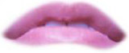
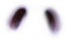
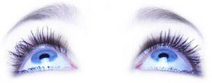

Menu
centreren
centreren
positionering
relatieve positionering
relatief-absolute positionering
fixed positionering
stapelvolgorde
float / clear
links en rechts floaten
clear en herstellen
flexbox
complete oefening
Opgave B.2: relatief-absolute positionering (
screenshot
)
positioneer mond, neus en ogen binnen het kader
  